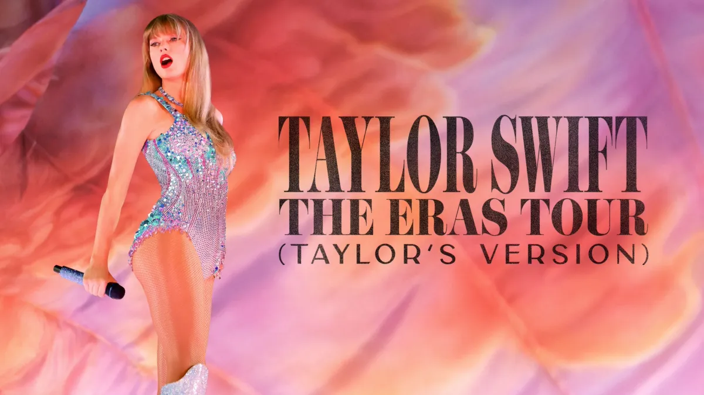
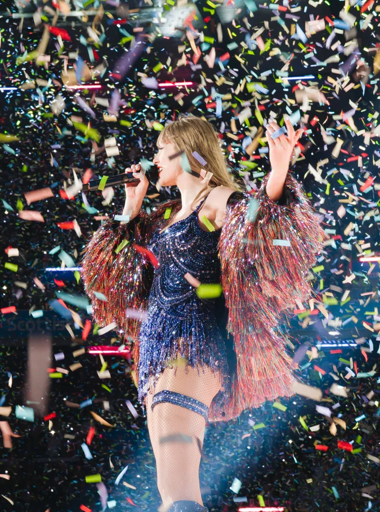
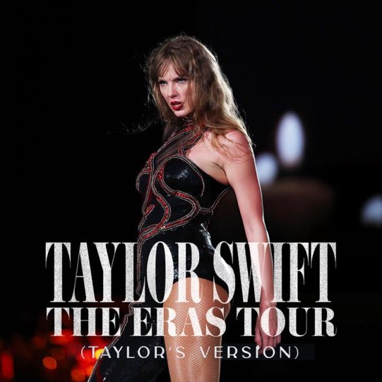

The Eras Tour
Taylor Swift is an absolute icon, and The Eras Tour was a groundbreaking event that changed the way fans experience live music.
Tour Statistics
- Over 140 shows worldwide
- More than 10 million tickets sold
- Hundreds of millions in revenue
- Massive attendance and global media attention
Cultural Effects
- Friendship bracelets became a huge part of the fan experience.
- Fans loved costumes and dressing up to match each era.
- The tour brought people together from around the world.
- Many people gathered outside stadiums to listen even without tickets.
Tour Highlights

The Eras Tour became a cultural event, combining music, fashion, storytelling, and fan connection into one unforgettable experience.
Eras
- Taylor Swift 🎤
- Fearless 🌾
- Speak Now ✨
- Red ❤️
- 1989 📱
- Reputation 👑
- Lover 💖
- Folklore 🌲
- Evermore ❄️
- Midnights 🌙
- The Tortured Poets Department 📖
- The Life of a Showgirl 💃

Fan Experience
Fans often describe the concert as a journey through Taylor’s musical history, with each era feeling like a different chapter.
Extra Tour Moments

